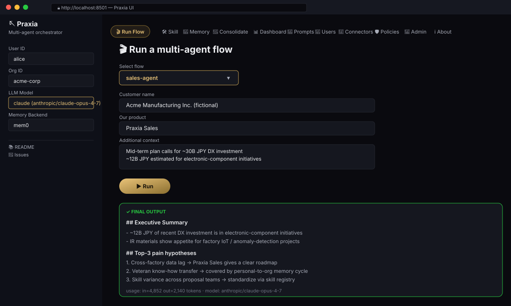
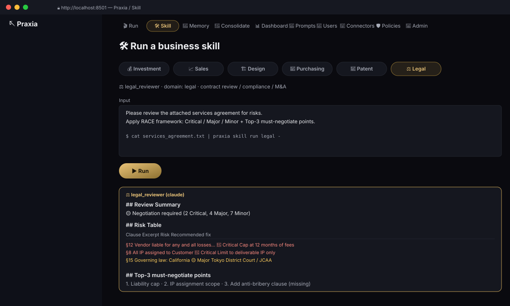
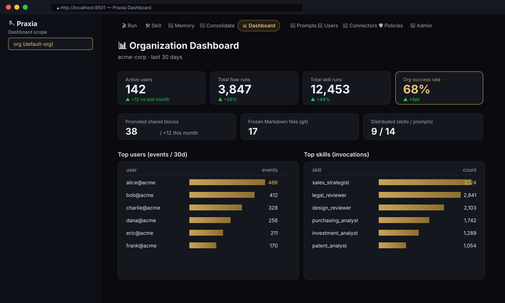
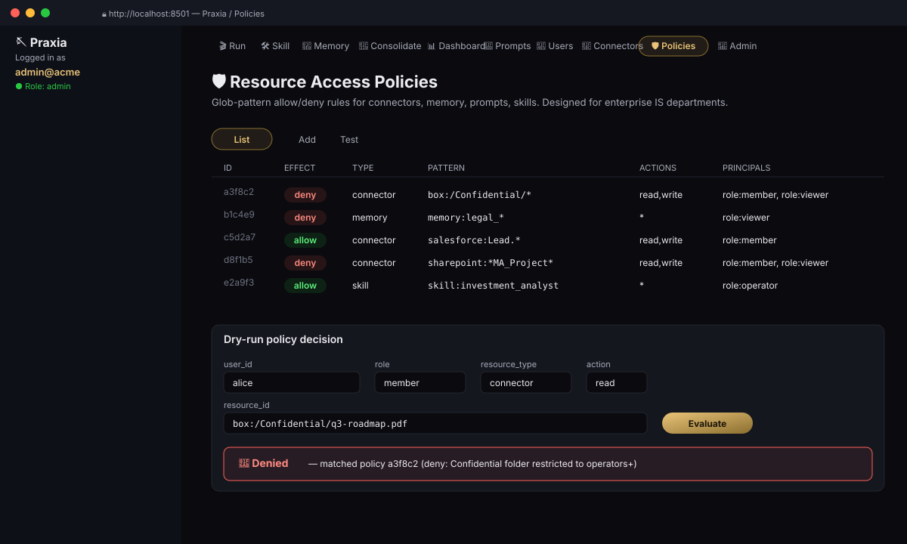
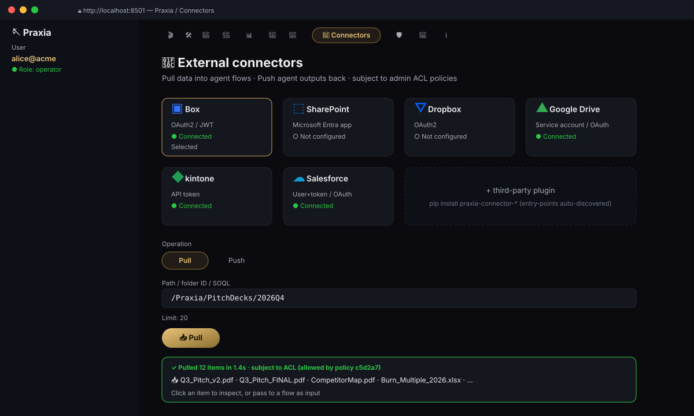
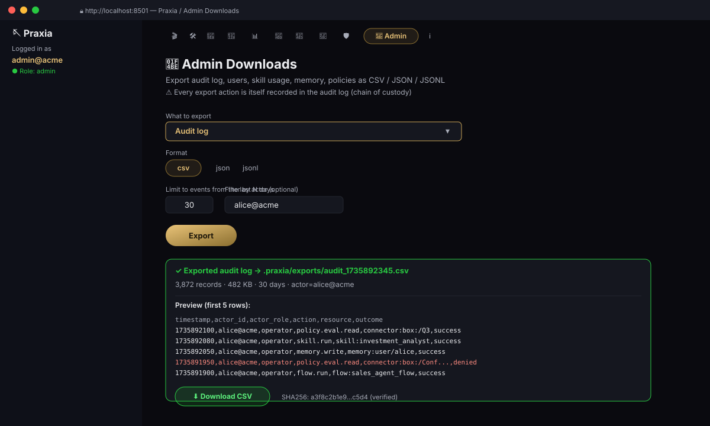

Personal → org memory loop
Senior staff's "magic prompts" auto-promote into shared knowledge via three independent paths: frequency, outcome correlation, and LLM self-eval.
Praxia is a workflow-specialized multi-agent orchestrator with a built-in personal-to-organizational memory loop. Your senior engineers' tacit knowledge promotes itself into shared best practices — automatically.
Windows 10 / 11 x64 alpha. pip install や Python は不要。macOS / Linux は近日公開。
Senior staff's "magic prompts" auto-promote into shared knowledge via three independent paths: frequency, outcome correlation, and LLM self-eval.
Frequency-based, outcome-correlated, LLM-scored. Run in parallel — never depending on a single signal. Configurable thresholds for auto-promote vs review.
Not just memory — your personal skills get tracked, scored, and promoted to the org skill catalog when they prove themselves.
record_outcome() attaches success/failure to episodes. The consolidator uses these signals statistically — no separate analytics pipeline needed.
Per-user switch: accumulate (default) or read_only. Read-only sessions silently drop writes — useful for sensitive content. Admins can lock the mode tenant-wide or by role.
Run several LTMs in parallel and fuse with Reciprocal Rank Fusion — or route per query (temporal → Zep, audit → JSON, entity → Mem0). English + Japanese keyword detection. Higher recall without picking a winner.
JSON, Mem0, LangMem, Letta, Zep, HindSight — switch with one line. Plus Graph layer (optional) for relationship-heavy domains. Zero vendor lock-in.
Claude, ChatGPT, Gemini, Gemma, Qwen-API, Qwen-local (Ollama), DeepSeek, Mistral, Grok, Llama, Cohere, Perplexity, Phi + 100+ via LiteLLM. Same models on enterprise clouds: azure/* (Azure OpenAI), azure_ai/* (AI Foundry), bedrock/* (AWS Bedrock), vertex_ai/* (GCP Vertex AI). Auto-detect from env vars; switch model per-call.
API key + JWT + OIDC (Google/MS/Okta/GitHub/Keycloak) + 4 default roles + append-only audit log. Most competitors paywall this.
Each Praxia user authorizes Box / Microsoft 365 / Dropbox / Drive / Salesforce / Notion / Atlassian / Slack / GitHub / HubSpot / Zendesk / Linear / kintone with their own credentials. The external system's native ACL is enforced per Praxia user — alice can only see what alice has access to. Self-service UI under Preferences → Service Connections.
OAuth tokens use envelope encryption — fresh DEK per write, AES-GCM payload, DEK wrapped by your KMS. 5 adapters: local / aws / azure / gcp / vault. Master key never lives on the application host.
praxia serve exposes /api/v1/oauth/{provider}/{start,callback,status}. Multi-worker safe state cache (TTL-pruned JSON), pinned redirect URI via PRAXIA_PUBLIC_URL, optional success-redirect to your frontend.
Glob-pattern allow / deny rules per resource type (connector, memory, prompt, skill). Built for enterprise IS departments. Every decision audit-logged.
An LLM-driven tool-use loop over your full Praxia stack — personal memory, org memory, frozen layer, skills, connectors. The agent picks tools on its own (search → run skill → pull connector → answer) with ACL gates and audit logging. Ships as praxia.agent.AutonomousAgent, praxia agent run, and an MCP meta-tool for remote clients.
For workloads where the environment doesn't give you a free answer key — private-corpus fact QA, SOP / compliance, customer support over manuals. Wraps the autonomous agent with task-type routing + query decomposition (multi-hop) + pre-retrieval + grounding verification + no-improvement early-stop, plus an explicit abstain path when sources don't support a confident answer. Calibrated against an in-house HotpotQA / SQuAD v2 / JEMHopQA harness — decomposition added +12pt on HotpotQA-distractor 40q. Every accepted claim carries [L1#0, L3#2, …] citations; every round is in the audit log. Verifier / QueryDecomposer / TaskClassifier are all pluggable — drop in TiDB Vector / pgvector / GraphRAG / HHEM-grounding / your own without touching core.
Describe the task in one line ("score contract risk 1-5 in JSON") → get a production-grade prompt design back: tuned system message, ${variable} user template, 2-3 few-shot examples, 5-criterion rubric. Per-LLM idioms applied automatically (Claude XML / OpenAI JSON-mode / DeepSeek-R1 reasoning / Mistral concise / Llama numbered steps).
The LLM authors python-pptx / python-docx code, a sandbox runs it (AST allowlist + 30s timeout + 512MB cap on POSIX), and you get a design-rich .pptx / .docx back — multi-column layouts, matrix slides, embedded matplotlib charts, themed branding (colors / fonts / logo / footer from .praxia/themes/). On traceback the error is fed back to the LLM and the attempt repeats up to 3 times. Themes managed in Admin → 🎨 Themes.
Sales prep, logic checking, RAG self-correction — three production-ready multi-agent pipelines that run in 5 minutes. No bespoke orchestration code required.
Investment, sales, design, purchasing, patent, legal — domain-tuned agents with built-in guardrails (tax law, jurisdictional caveats, hallucination guards).
Skills serialize to standard SKILL.md. Drop into Claude Skills, Cursor Skills, or any MCP-compatible registry without code changes.
Sentence-level hallucination detection and retrieval metrics ship as first-class modules. "It works" comes with proof attached.
Catch quality regressions before merge. tests/llm_eval/ grades real LLM output against rubrics + a committed baseline. Score drop > 5pt fails the build. Per-skill cases ship for all 6 skills.
Test prompt variants on real users with deterministic per-user assignment (SHA-256 bucket). Audience filter (roles / users / window). Outcome rollup + tentative winner detection. CLI + SDK.
Every public surface (auth / memory / fusion / exporters / OAuth / parsers / CLI / extensions / experiments / connectors / agent) ships with backend stubs, fixture factories, and protocol-conforming drivers — so contributors can write hermetic tests without standing up real services. CI runs them on every PR.
Box / SharePoint / Dropbox / Drive / kintone / Salesforce + Notion / Confluence / Jira / Slack / Teams / GitHub / HubSpot / Zendesk / Linear / S3 / Azure Blob / GCS / WebDAV / Email. Per-user OAuth means alice only sees what alice can in each system.
Drop a file in — auto-dispatch by extension. PDF page-by-page, Word with heading detection, Excel as Markdown tables, PowerPoint with speaker notes. Custom formats register via entry points.
Skills produce Markdown by default. OutputFormatSkill infers requested format from natural-language hints ("パワポで" → PPTX, "as a Word doc" → DOCX). Custom formats register via entry-point.
Speech-to-text (Whisper) and text-to-speech (OpenAI TTS / ElevenLabs / Piper). Embedded in Streamlit UI as record-and-go input and read-aloud output.
Create / update / delete / deactivate / rotate keys / change roles — all via CLI, UI, or SDK. All operations audited.
Pin which backend(s) users may pick and what the default mode is, at the tenant level. Resolution: admin enforced > call-site > user pref > admin default.
CSV / JSON / JSONL exports of audit log, users, usage, memory, policies — for compliance, SIEM, backups. Each export action self-audited.
Flow / skill counts, success rate, top users, promoted blocks, frozen files, distributed skills — out of the box, with no separate analytics pipeline.
Users save personal prompts. Admins promote them to org or push to specific roles / users. Three scopes with merge precedence.
Use Praxia from Claude Desktop / Cursor / Continue.dev. Local: praxia mcp serve. Remote (multi-host): praxia serve exposes /api/v1/mcp with auth + audit log. Every skill + flow becomes an MCP tool automatically.
Use Praxia as a brain behind your own frontend (SDK embed or praxia serve FastAPI HTTP API), or run the bundled Streamlit UI for the fastest path. Same auth, memory, skills.
Permissive license, commercial-friendly. NOTICE.md inventories every dependency's license. Open Core path for enterprise extras planned.
Landing has chip-style nav on phones, scrollable tabs, ≥44px touch targets, prefers-reduced-motion respected. Streamlit UI injects responsive CSS + a "Compact mode" toggle for slow connections.
Pick a role + use case to see the matching CLI command, sample output, and concrete Before/After. Then click Run preview to see a typed-out simulation in your browser — no install yet.
You're meeting Acme Manufacturing tomorrow at 14:00. Praxia ingests their IR, recent press, and your past wins → produces top-3 pain hypotheses, a 5-row FAQ with citations, and a proposal outline.
Variation: attach .pdf board deck → Praxia auto-parses + cites it. Or pull straight from Salesforce → praxia connector pull salesforce "SELECT Id,Name FROM Account WHERE Id='001..'".
praxia run sales \
--customer-name "Acme Manufacturing" \
--product "Praxia"# Click ▶ Run preview to see a typed-out simulationPraxia is opinionated about where it shines — mid-cap to large enterprises with senior staff whose tacit knowledge is currently locked in one person's editor.
Need: Roll out AI tools across the org without handing every team a different vendor — and without paywalling SSO / RBAC / audit.
Fit: Auth + RBAC + ACL + per-user OAuth + audit log all in OSS, not behind an enterprise tier. Self-hostable on-prem or private cloud. Same code as the OSS, just operated by you.
Typical year-1 result: 100 knowledge workers, ~$1.25M net benefit, full audit trail, no per-seat licensing surprises.
Need: Senior architects' code-review and design intuition is the bottleneck. Junior PMs ramp in 12–18 months. Best practices live in Slack threads and one staff engineer's head.
Fit: DesignSkill + sleep-time consolidation distills "how senior X reviews specs" into reusable shared blocks. Markdown + git frozen layer fits existing PR review workflow.
Typical year-1 result: Senior load 16h/wk → 4h/wk, junior PM ramp 6–9 months, NFR coverage 5–7 → 15–20 axes.
Need: 50–100 contracts/month bottlenecked on 2–3 people. Critical risk slips through under deadline. Need an auditable AI workflow with no vendor lock-in.
Fit: LegalSkill (RACE framework) + read-only memory mode for sensitive contracts + per-user OAuth respects external system ACL + every action audited. Apache 2.0 means you can show the source to your auditors.
Typical year-1 result: Per-contract review 60–90min → 10–15min, throughput 50–80/mo → 200–300/mo, critical-miss rate 5–10% → 1–2%.
Need: Build a domain-specific agent system over Mem0 / LangGraph / your-own-vector-DB without re-implementing auth, memory cycling, dashboards, exporters yourself.
Fit: 7 plugin types (~50 LoC each) — connectors,
memory backends, parsers, exporters, OAuth providers, skills,
flows. Use as a Python library, run praxia serve
as a backend, embed in LangGraph. Apache 2.0.
Typical day-30: domain skill PR'd, custom connector pip-installable, memory cycling working, ~3 weeks ahead of building it from scratch.
Need: 50+ AEs prepping for meetings; quality of pre-call research is uneven. Senior reps win 2× more deals than juniors and the pattern doesn't transfer.
Fit: SalesSkill + memory cycling distills "how senior X researches an account" into shared playbooks. Salesforce + Slack + GitHub connectors feed real customer context. Per-user OAuth means each AE only sees their own pipeline.
Typical year-1 result: Pre-call prep 6h → 1h, proposal acceptance rate +15-20pt, meetings/wk per AE 3 → 6-8.
Need: 5-supplier RFQs take 2-3 weeks. ESG / BCP / single-source risk is treated as an afterthought. Subcontract Act / Anti-Bribery compliance creates legal exposure if missed.
Fit: PurchasingSkill (QCD+S framework) + connectors to Salesforce / kintone / Box for RFQ documents. Audit log captures every supplier evaluation step.
Typical year-1 result: 5-supplier eval 3-4wk → 3-5 days, hidden cost discovery +30%, single-source detection 70% → 95%+.
Need: Prior-art searches cost $3-5k each via outside counsel. Cross-domain art is often missed. Inventors expect first-pass results in days, not weeks.
Fit: PatentSkill (5-step framework) + file parsers for inventor disclosure docs. Memory cycling captures "patterns that distinguish prior art from real novelty" across cases. Read-only memory mode for confidential client work.
Typical year-1 result: Per-case time 1-2 days → 2-4h internal, external counsel fees −50-70%, faster turn for inventors.
OIDC SSO (Google / Microsoft / Okta / GitHub / Keycloak) is in the OSS. Most agent frameworks ship without it; most agent platforms paywall it. Praxia treats it as table stakes.
Layer 4 is plain Markdown in your git repo. Layer 3 exports to JSONL. Layer 1 is your chosen backend's native format. The framework doesn't hold your data hostage — leaving costs nothing.
Apache 2.0. Show the source to your auditors, your security team, your customers. No "trust us, the SaaS is secure" — inspect the auth manager yourself.
Run Mem0 + Zep + HindSight in parallel and fuse with RRF, or route per query. No commercial agent platform exposes this — they pick a backend and lock you in. Praxia treats it as a first-class feature.
When alice pulls from Box, Box's own ACL applies — alice only sees what alice can see. Service-account designs (typical SaaS shortcut) leak data across users. Praxia's per-user OAuth makes this the default.
Set PRAXIA_LOCAL_MODEL=gemma, run Ollama,
choose backend=json. No cloud LLM, no cloud vector DB,
no telemetry. Air-gapped customers run identical code as
cloud customers.
OAuth tokens are envelope-encrypted with the master key in AWS KMS, Azure Key Vault, GCP KMS, HashiCorp Vault — or locally for dev. Most agent frameworks store tokens with a local symmetric key; Praxia treats KMS as a first-class concern in the OSS.
Multi-worker safe — state cache survives across
processes (TTL-pruned JSON file), redirect URI pinned via
env var. Run praxia serve behind nginx and the
callback works correctly with N replicas. Most OSS
competitors only support CLI loopback.
Run controlled experiments on prompts / skills / LLMs with deterministic assignment + outcome tracking. CI-gate quality regressions with a baseline-flagging eval framework. Both in the OSS — no separate "experimentation platform" subscription.
Run flows and skills via CLI / SDK / UI. Every interaction lands in your personal memory automatically — no save() calls in business code.
p = Praxia(user_id="alice")
p.run(SalesAgentFlow, inputs={...})
# Memory accumulates implicitlyWhen deals close, tests pass, or PRs merge, attach an outcome. The consolidator uses these to weight which patterns are actually effective.
p.personal_memory.record_outcome(
episode_id=ep.id,
success=True, score=0.9,
notes="closed-won",
)The Sleep-time Consolidator clusters similar memories across users, runs each through the 3-path engine, and auto-promotes the high-confidence ones.
praxia consolidate
# auto_promoted: 3, review_queued: 5Promoted shared blocks become living org knowledge. The most stable get frozen into Markdown + git for PR review. Every step is auditable.
praxia freeze --block manufacturing_pain
# → .praxia/frozen/.../*.mdCustomer IR + past minutes + RAG → hypotheses → FAQ → proposal outline.
praxia run sales \
--customer-name "Acme" \
--product "BizFlow"Three agents (structure / contradiction / reader) review long docs.
praxia run logic \
--document spec.mdSelf-correcting RAG: query expansion → eval → hallucination check loop.
praxia run rag \
--question "What license?"Equity research, due diligence, portfolio decisions with bull/bear analysis.
Account research, proposal drafting, FAQ prep, objection handling.
System design review, requirements engineering, architecture trade-offs.
Supplier evaluation, RFQ analysis, TCO calculation, BCP risk scoring.
Prior-art search, claims drafting, patent maps, filing strategy.
Contract review, compliance checks, M&A diligence, policy drafting.
pip install to live agent in under 5 minutes.The easiest way to try Praxia is the native desktop installer. The app embeds the Praxia server inside the installer — install, launch, paste an LLM provider key, and you're running. No praxia serve process to start, no pip install, no Python on the user's machine. Settings exposes only the three things a user controls: LLM provider keys (Anthropic / OpenAI / Google / Azure OpenAI / Qwen DashScope / Hugging Face — Gemma covered via all three cloud paths), local LLM (Ollama URL + model), and optional SSO tenant URL. Everything else (port, API key, storage layout, CORS) is managed automatically.
Desktop-only features: 🗂 Local folder ingestion with auto-discovery — point Praxia at a folder (e.g. ~/Documents/Contracts/) and the app walks it recursively, parses every supported file (PDF / DOCX / PPTX / XLSX / TXT / MD / code) and makes the contents searchable by the agent alongside L1 / L3 / L4 memory. Useful for confidential documents you don't want uploaded to cloud storage. Plus native notifications when a long-running agent task finishes, and native file dialogs for drag-and-drop attachments. (🚧 Phase 1b)
📦 Download Praxia Desktop (.exe, ~147 MB)
Windows 10 / 11 x64. Unsigned alpha — Windows SmartScreen will warn on first launch; click 「詳細情報」→「実行」 (or "More info" → "Run anyway") to proceed. Also available: .msi for managed deployment · all releases & notes. macOS / Linux land in Phase 1b.
For library / SDK / CLI use, the Python install:
# Install (with UI + connectors + office parsers)
pip install "praxia[ui,connectors,office]"
# Initialize
praxia init
# Run flows + skills
praxia run sales --customer-name "Acme"
praxia skill run investment "3-year thesis on Acme Mfg (fictional)"
# Launch the UI (11 tabs incl. Dashboard / Policies / Admin / Connectors)
praxia ui --port 8501
# OR — backend-only mode for your own frontend (FastAPI HTTP)
pip install "praxia[server]"
praxia serve --host 0.0.0.0 --port 8000
# Output exporters — render skill output to HTML / PPTX / DOCX
praxia export report.md slides.pptx --title "Q3 Review"
# Memory mode — accumulate (default) or read-only per user
praxia memory mode --user-id alice read_only
praxia admin memory-policy-set --enforced-backend mem0 --allowed mem0,zep
# A/B experiments — test prompt variants with deterministic assignment
praxia experiment create proposal_v2 --name "Prompt v2" \
--variants '{"control":{"prompt":"..."},"candidate":{"prompt":"..."}}' \
--traffic-split "control=0.5,candidate=0.5"
praxia experiment start proposal_v2
# Production-grade OAuth + KMS-encrypted tokens
export PRAXIA_KMS_ADAPTER=aws
export PRAXIA_KMS_KEY_ID=arn:aws:kms:...
pip install "praxia[server,kms-aws]"
praxia serve --host 0.0.0.0 --port 8000
# Personal → org memory distillation
praxia consolidate
# Enterprise: resource policies, audit exports, connectors
praxia policy add deny connector "box:/Confidential/*" --principals "role:member"
praxia admin export-audit audit.csv --since-days 30
praxia connector pull salesforce "SELECT Id, Name FROM Account"Bring your own LLM key — Anthropic, OpenAI, Google (Gemini / Gemma), Alibaba (Qwen), or run Gemma / Qwen locally via Ollama. Two deployment modes: full-stack praxia ui or backend-only praxia serve behind your own frontend — see deployment-modes.md.
See full Before/After tables in docs/use-cases.md.






Plus 👥 Users, 📝 Prompts, 🧠 Memory, 🌙 Consolidate, ℹ About tabs (11 in total). Local file upload supported throughout.
Before: 4–6h reading the deck, scrubbing competitor research, modeling financials.
After: Full 5-section memo (Profile / Quant / Qual / Risk / Decision) with bull-and-bear cases and confidence intervals.
# CLI
praxia skill run investment "\
Mid-term thesis on a hypothetical issuer:
- sector: consumer electronics, mid-cap JP
- horizon: 3 years
- compare with two anonymized peers
"Before: Hit-or-miss prep based on LinkedIn skim. CFO asks about a recent capex you didn't know about.
After: Praxia ingests IR + 6 months of press, extracts top-3 pain hypotheses, and generates a 5-row FAQ with citations.
# Multi-agent flow
praxia run sales \
--customer-name "Acme Manufacturing" \
--product "Praxia Sales" \
--additional-context "Mid-term plan
calls for 30B JPY DX investment"Before: Senior architect spending 16h/wk on PR-style design reviews. NFRs slip through.
After: DRAGON framework (Data flow / Requirements / Architectural fit / Gaps / Operation / NFRs) — checks all 6 axes systematically.
praxia run logic --document spec.md
# or single-skill review
praxia skill run design "\
Review the attached architecture for
the new payments microservice...
"Before: Direct cost only; ESG / geopolitics / BCP risk treated as afterthoughts.
After: Full TCO matrix + QCD+S framework + Subcontract Act compliance check + risk grid.
praxia skill run purchasing "\
Evaluate 5 PCB suppliers for our new
product line. Annual volume 2M units.
Constraints: Japan-domiciled HQ,
ISO9001, no Russia/Belarus exposure.
"Before: 30–50万円 / case to outside counsel for first-pass research.
After: 5-step framework (element extraction → IPC/FI/F-term search formula → hit analysis → novelty → inventive step). Counsel only reviews the draft.
praxia skill run patent "\
Prior-art search: solid-state battery
with three-layer ceramic electrolyte
and Li-rich cathode. Provide:
1. Element decomposition
2. IPC/FI/F-term search strategy
3. Hit-analysis table
4. Novelty + inventive-step verdict
"Before: 50–100 contracts/month bottlenecked on 2–3 people. Critical risks slip through.
After: RACE framework (Risk / Allocation / Compliance / Exit) + 🔴/🟡/🟢 severity ladder. Critical-risk miss rate falls from 5–10% to 1–2%.
praxia skill run legal "\
Review this services agreement
focusing on:
- Liability cap
- IP assignment vs license
- Data return on termination
- Anti-bribery clause
"Before: Recruiter screens 50-80 resumes/day; quality varies; senior recruiters' "spot the right hire" instinct doesn't transfer to juniors.
After: Custom HRSkill applies your role criteria + culture fit signals consistently. Memory cycling captures "what predicted a successful hire" from past placements.
# Custom skill (yours) + connectors
praxia connector pull s3 \
"hiring-bucket/q3-applicants/" \
--user-id alice
praxia skill run hr_screener "\
Apply ICP criteria + grade against
the Senior PM role posted Sep 5.
Output: top-10 ranked + flag risks.
"Before: 200+ tickets/day, junior agents escalate ~40% to seniors; SLA breaches in regulated industries trigger fines.
After: Zendesk + GitHub + Confluence connectors give context. Custom SupportSkill drafts replies in your voice. Memory cycling captures "how senior X handled the tricky ones".
praxia connector pull zendesk \
"tickets:status:open priority:high"
praxia skill run support_triage "\
Read the ticket and last 5 comments.
Suggest a reply matching our brand voice.
Flag if escalation is needed.
"Before: 6-month vendor evaluation, lawyer review, custom SSO integration, separate audit log pipeline. Each tool needs its own.
After: OIDC SSO (Microsoft / Okta) day-one. SCIM provisioning auto-syncs user lifecycle. KMS-backed token encryption per cloud. Audit log for SIEM ingest.
# Production deploy
export PRAXIA_SSO_PROVIDER=microsoft
export PRAXIA_KMS_ADAPTER=aws
export PRAXIA_SCIM_TOKEN="$(openssl rand -hex 32)"
praxia serve --host 0.0.0.0 --port 8000
# Okta admin: point SCIM at /scim/v2/UsersBefore: PhD students spend weeks doing prior-art / state-of-the-art reviews. Sometimes they miss the one paper that already solved the problem.
After: Email + GitHub + WebDAV (institutional repo) + S3 (preprints) connectors feed papers in. Custom ResearchSkill extracts methodology + findings + relevance score. RAG-fused memory across the lab's history.
praxia connector pull s3 "arxiv-mirror/2024/cond-mat/"
praxia run rag --question "\
Latest research on three-layer ceramic
electrolytes for solid-state batteries —
group by approach, flag contradictions.
"Full Before/After tables (10 industries × 3 use cases each) in docs/use-cases.md.
Year 1 ROI = (N × C × t × s₁) + Q − P
Year 2+ = (N × C × t × s₂) + Q × g − P
N = knowledge workers in scope
C = loaded cost / FTE
t = time on routine work
s₁ = year-1 time savings (typ. 30–50%)
s₂ = year-2 time savings (typ. 50–75%)
↑ s₂ > s₁ because org memory compounds
Q = quality lift (errors avoided)
P = Praxia cost (license + infra)| Variable | Year 1 | Year 2 |
|---|---|---|
| Workers in scope (N) | 100 | 100 |
| Loaded cost (C) | $90k | $90k |
| Routine work share (t) | 40% | 40% |
| Time savings (s) | 35% | 60% |
| Quality lift (Q) | $65k | $200k |
| Praxia cost (P) | $80k | $80k |
| Net benefit | $1.25M | $2.30M |
3-year cumulative net ≈ $5.2M. Even after halving each parameter, ROI remains > 10×.
| KPI | Before | 1 year | 3 years |
|---|---|---|---|
| New-hire ramp time | 6–12 months | 4–6 months | 2–3 months |
| Knowledge loss on departure | Several / yr | 50% reduction | Zero |
| Output quality variance | 2–3× spread | 50% narrower | ≤ 20% spread |
| Cross-team best-practice flow | Almost none | 5–10 / mo | 30+ / mo |
| AI utilization (org avg / individual best) | 30–50% | 60–70% | 80%+ |
Define a multi-agent pipeline by subclassing Flow. Each step references prior outputs via ${var} templates.
class IncidentResponseFlow(Flow):
name = "incident_response"
steps = [
FlowStep("triage", ...),
FlowStep("hypothesis", ...),
FlowStep("mitigation", ...),
]Subclass Skill with a system prompt + manifest. Auto-serializes to SKILL.md for MCP / Claude Skills.
class HRRecruitingSkill(Skill):
manifest = SkillManifest(
name="hr_recruiting",
domain="hr",
...
)
system_prompt = """..."""Implement the 4-method MemoryBackend protocol. Plug in any vector DB (Pinecone, Weaviate, Qdrant, ...) — and optionally combine with built-ins via CompositeBackend / RoutedBackend.
class PineconeBackend:
def add(...): ...
def search(...): ...
def all(...): ...
def clear(...): ...Implement the 2-method Connector protocol (pull / push). Per-user OAuth, ACL enforcement, and audit logging plug in for free. End-to-end Notion example in the guide.
class NotionConnector:
name = "notion"
def pull(self, path, *, limit): ...
def push(self, path, data): ...Built-in: HTML, PPTX, DOCX, MD, JSON. Add your own (LaTeX? RTF? Confluence Storage?) by implementing the Exporter protocol and declaring an entry-point.
class LatexExporter:
format = "latex"
extensions = ("tex",)
def export(self, content) -> bytes: ...Detailed extension guides: PLUGINS.md · CUSTOM_CONNECTORS.md · design specs (EN + JA).
praxia serve as the HTTP backendDetailed feature inventory and integration matrix in docs/FEATURES.md.
No. The default json backend stores everything on local disk. LLM calls go to whichever provider you configure — pick qwen-local (Ollama) for fully in-house operation. You choose the trust boundary.
Mem0 is a memory layer. Praxia is the orchestrator + memory + skill registry + flows + eval + auth. Mem0 is one of six interchangeable backends inside Praxia.
Three guardrails: (1) auto-threshold defaults to 0.75 — high; (2) review queue catches mid-confidence items for human approval; (3) the audit log records every promotion so rollback is trivial.
Yes. Pick qwen-local (Ollama) for the LLM and json or self-hosted Mem0/HindSight for memory. No cloud calls.
LangGraph excels at general agent orchestration but doesn't ship workflow templates, business skills, memory cycling, or auth. Praxia is opinionated and batteries-included for the "specialized multi-agent + organizational memory" niche.
Yes — Apache 2.0. Even auth/SSO is in the OSS, where competitors typically paywall those features.
No. Add your own with ~20 lines. PRs that contribute new skills are very welcome.
Skills serialize to standard SKILL.md frontmatter. Drop any Praxia skill into Claude Skills, Cursor Skills, or any MCP registry without code changes.
No. Layer 4 is plain Markdown in your git repo. Layer 3 exports to JSONL. Layer 1 personal memory is standard JSONL or your chosen backend's native format. You can leave at any time.
JSON backend handles ~10k users comfortably. Beyond that, switch to Mem0 + Qdrant/Pinecone or HindSight. The promotion engine scales with LLM tokens — budget 10–50 LLM calls per consolidation per cluster.
Yes — that's mode B. Two paths: embed the Python SDK directly if your backend is Python, or run praxia serve (FastAPI, 8 endpoints under /api/v1) and call it from any HTTP client. Same auth, RBAC, ACL, and audit log as the Streamlit UI. Setup recipe: deployment-modes.md.
No. Personal memory accumulates implicitly during normal use. Per user, you can also flip read_only mode for sensitive sessions — writes are silently dropped, reads still work. Admins can lock the mode tenant-wide or per role.
Use OutputFormatSkill — it detects format hints in natural language ("パワポで" / "as a Word doc" / "HTML please") and renders via the matching exporter. CLI: praxia export report.md slides.pptx. Custom formats register via the praxia.exporters entry-point.
Yes. The Connector protocol is two methods (pull / push) and ~50 lines. Per-user OAuth, ACL enforcement, and audit logging plug in for free. End-to-end Notion example: CUSTOM_CONNECTORS.md.
Yes. gemma / gemma-2b / gemma-9b / gemma-27b via local Ollama; gemma-cloud via Google Vertex AI. PRAXIA_LOCAL_MODEL=gemma makes auto_detect() fall back to Gemma instead of Qwen-local when no cloud key is set.
Envelope encryption: a fresh 256-bit DEK per token, AES-GCM payload encryption, and the DEK wrapped by a configurable KmsAdapter. 5 adapters ship: local (HKDF, dev), aws (AWS KMS CMK), azure (Key Vault Keys), gcp (Cloud KMS), vault (HashiCorp Transit). Master key never leaves the KMS / HSM. Switch with PRAXIA_KMS_ADAPTER=aws.
Yes — built into the OSS. Define an experiment with control / treatment variants, set traffic split, restrict the audience (roles / users / time window). Each user's assignment is deterministic (SHA-256 hash) so they always see the same variant during the experiment. Outcomes auto-track via the existing record_outcome() API. praxia experiment results <id> shows tentative winner.
Yes. Praxia is an MCP server in two flavors. Local (recommended for desktop): praxia mcp serve → configure Claude Desktop's mcp.json to spawn it via stdio. Remote (multi-host / team): run praxia serve and the MCP HTTP+SSE endpoints under /api/v1/mcp are available. Auth via API key, JWT, or a shared X-MCP-Token. Every business skill + multi-agent flow + memory search becomes an MCP tool automatically — no per-tool wiring required.
Run tests/llm_eval/ in CI. Each PR runs 6 canonical cases (one per business skill) against the configured LLM and grades output with rubrics (keyword / structure / length / must-not-contain / LLM-as-judge). Scores below the committed baseline minus 5pt fail the build. Update the baseline with --update-baselines after a known-good change.
Praxia is fully open source under Apache 2.0 — every feature (SSO, RBAC, ACL, audit, OAuth, all skills, all connectors, AutonomousAgent) is in the OSS package. The hosted edition is invitation-only alpha while we tune onboarding; commercial pricing will be set at v1.0.
$0
forever · Apache 2.0
Invitation-only
pricing TBD at v1.0 · waitlist open
Alpha status: hosted backend is being stabilized. We onboard waitlist organizations in batches of ~10 as capacity allows. Need on-prem or compliance review? Mention it in the waitlist form and we'll coordinate.
Join waitlistLooking for OSS license interpretation, embedded use, or revenue share? See LICENSE and NOTICE.
Star us on GitHub, run the quickstart, or reach out for a tailored PoC.